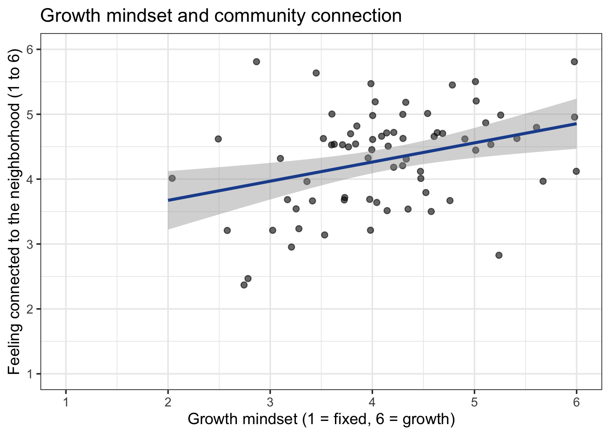
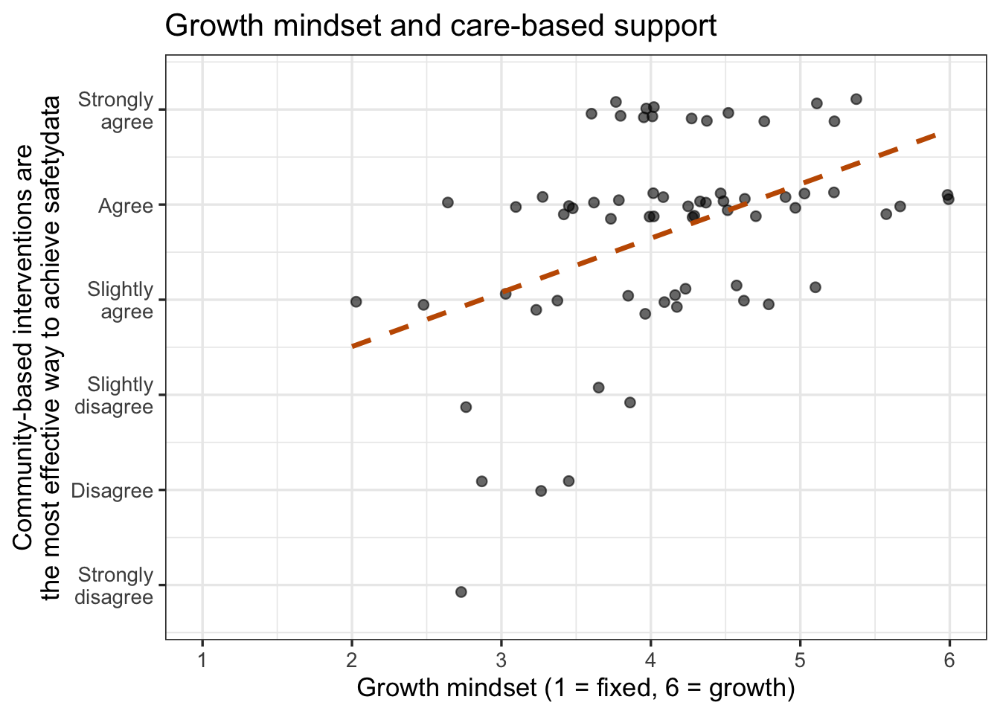

library(tidyverse) # dplyr, ggplot2
library(readxl)
library(knitr)25 Relate 2 Variables
Pearson correlation (normal) and Spearman correlation (non-normal)
Abstract
This chapter is the Analysis Map’s “relate 2 variables” row: two scores from the same people, and the question of whether they go together. Researchers learn what a correlation coefficient measures (the direction and strength of a straight-line relationship, on a scale from -1 to +1), how to look at the pair in a scatterplot before testing, how to check the shape of both variables and then choose the Pearson correlation (normal data) or the Spearman rank correlation (data that are not normal, or a single rating), and how to report either one, where the coefficient is its own effect size. The Play uses a Cohort 11 FRI team’s community safety data for both cases: growth mindset related to feeling connected to the neighborhood (two composites, Pearson) and to support for community-based violence prevention (a single item, Spearman), the team’s published finding; the Lab runs both on the lab dataset with Ref’s checks; Your Turn gives the template for the team dataset.
Keywords
correlation, Pearson, Spearman, scatterplot, effect size, relationship
Resources Ref’s kickoff: find the Ref before you code
Ref’s kickoff: find the Ref before you code
Ref’s kickoff: find the Ref before you code
Open Project → Open .qmd → Run load-library chunk → Run All Chunks Above → code. If anything looks wrong, use Ref’s Quick Checklist.
ResourcesResources: correlation
- Interactive correlation (Kristoffer Magnusson; drag r and watch the scatterplot change)
- Correlation in R (DataCamp tutorial;
cor()andcor.test()) - Correlation test between two variables in R (STHDA; Pearson and Spearman side by side)
- R documentation:
?cor.test - Visualize a Relationship: the scatterplot every correlation should be looked at with
- Relate 3+ Variables: where a correlation goes when a second predictor enters
25.1 When is this the right test?
You have two scores from the same people and you want to know whether they go together: do people who report more social support also report higher well-being? Do people who place themselves higher on the social ladder rate their health better? On The Analysis Map that is the relate 2 variables row, and the statistic is a correlation coefficient.
Two things decide whether you are on this row:
- Both variables are scores, not groups. If one of them is a category (women and men, treated and not treated), you are on the comparison side of the map. A yes/no variable coded 0/1 can technically be correlated with a score, but the result is just the two-group comparison in disguise; use Compare 2 Groups and get an effect size that is built for it.
- There are exactly two. The moment a third variable enters the question (does support predict well-being after accounting for stress?), you are in Relate 3+ Variables. A correlation is the simplest possible model: one straight line through one cloud of points.
As in every box on the map, the shape of the data picks the statistic:
| Statistic | Use it when | R function | Report |
|---|---|---|---|
| Pearson correlation r (parametric) | both variables are roughly normal (or close to it with 30 or more people) and the scatterplot looks like a straight-line cloud | cor.test(x, y) |
r, 95% CI, t(df), p |
| Spearman correlation ρ (non-parametric) | either variable is skewed, has outliers, or is a single rating with a few levels; or the relationship is consistently up or down but not a straight line | cor.test(x, y, method = "spearman") |
ρ (rho), p |
Play 1 is the parametric case; Play 2 is the non-parametric case. The coefficient runs from -1 (as one goes up the other goes down, perfectly) through 0 (no relationship) to +1 (perfectly together). Its size is read with the same labels in both versions: about .1 is small, .3 medium, .5 large (Cohen, 1988).
GoGo: see what r looks like before you compute one
Open Kristoffer Magnusson’s interactive correlation and drag the slider. At r = .1 the cloud is round and you would not guess the two scores were related; at .3 a tilt appears; at .5 the cloud is clearly an ellipse; at .9 it is nearly a line. Then look at the panel that shows shared variance (r²): an r of .3 means the two scores share only 9% of their variation. Do this before Play 1, and again with each coefficient you report, so that your size label (small, medium, large) is attached to a picture rather than a cutoff.
GoGo: the coefficient is the effect size
In the comparison chapters you ran a test and then computed a separate effect size (d, η², r). A correlation does both jobs at once: r (or ρ) is the effect size, and the p-value only says whether a coefficient that large would be surprising if the true correlation were zero. That is why the Results sentence leads with the coefficient and its confidence interval, not with the p-value, and why a “significant” r of .08 in a sample of 1,300 is not a finding worth a sentence of its own.
25.2 📋 The Play
ResourcesAbout the dataset:
safety_data.csv (an FRI Public Health team’s data, Cohort 11)
In fall 2025 an FRI Public Health team (Serena Suchdeve, Vivian Raposo, Caitlin Ngo, Kayla Vo, and Rowen Smith) surveyed Binghamton University students and Broome County residents about community safety: how safe and connected they feel in their neighborhood, how effective they believe different violence-prevention approaches are (care-based approaches such as community programs, education, and mental-health resources; fear-based approaches such as policing and deportation), and whether they hold a growth or a fixed mindset about whether people can change (Dweck’s Kind of Person Implicit Theory scale). Their report, Mixed-Methods Analysis of Preferences for Community-Based Violence Prevention and Intervention Approaches, found that a growth mindset predicted support for care-based community interventions (b = .57, p = .001, R² = .23) but not for fear-based policing. This chapter re-runs part of that analysis so you can see a published FRI result come out of the same code you are learning.
This is real data, de-identified for the playbook: the 75 consenting respondents who completed at least half of the survey, with response IDs, dates, ZIP codes, free-text answers, and the open-ended questions removed. The coded values are exactly as exported, so -99 (prefer not to say) and -50 (don’t know) are still there for you to recode. Variables used in the chapters:
FIXEDPERSON1_BASIC…FIXEDPERSON_ALL_R: the eight mindset items, on a 1 = Strongly agree to 6 = Strongly disagree scale (note the direction). Items without_Rstate a fixed mindset (“Everyone is a certain kind of person, and there is not much that can be done to really change that”), so a higher number means more growth mindset; items with_Rstate a growth mindset and are reversed. The mean of all eight is the compositeGROWTH(higher = more growth mindset).COMM_FEEL,COMM_HELP,COMM_NEIGHBORS,NOTCOMM_UNSAFE,NOTCOMM_RELY,NOTCOMM_DISTRUST: six neighborhood items (1 = Strongly disagree to 6 = Strongly agree); the threeNOTCOMMitems are reversed for the compositeCOMMUNITY.EFFECT_CARE_COMM: “Community-based interventions are the most effective way to achieve community safety” (1 to 6), a single item;EFFECT_FEAR_POLICE: the same for policing.GENDER: the class coding, 0 = Girl or woman, 1 = Boy or man, 2 = Nonbinary, genderfluid, or genderqueer;AGE;SOCIALSTATUS(1 to 10).
Cite the team’s report when you use this dataset: Suchdeve, S., Raposo, V., Ngo, C., Vo, K., & Smith, R. (2025). Mixed-methods analysis of preferences for community-based violence prevention and intervention approaches. FRI Public Health, Binghamton University. https://vraposo.quarto.pub/mixed-methods-analysis-of-preferences-for-community-based-violence-prevention-and-intervention-approaches/
The team’s research question was whether people who believe that people can change (a growth mindset) are more supportive of care-based approaches to community safety. Both Plays use that dataset and that question. Play 1 relates growth mindset to a second composite, feeling connected to one’s neighborhood, which is the Pearson case: two composites, both roughly normal. Play 2 relates growth mindset to the team’s headline outcome, agreement that community-based interventions are the most effective way to achieve safety, which is one 1-to-6 item and therefore the Spearman case. Relate 3+ Variables takes the same question one step further, as the team’s report did, with a regression and gender as a third variable.
safetydata <- read.csv("data/safety_data.csv") |>
mutate(across(where(is.numeric), ~ replace(.x, .x %in% c(-99, -50), NA))) |>
mutate(
GROWTH = rowMeans(cbind(FIXEDPERSON1_BASIC, FIXEDPERSON2_DIFF, FIXEDPERSON4_OLD, FIXEDPERSON_CERTAIN, # fixed-mindset items: higher = more growth
7 - FIXEDPERSON3_CHANGE_R, 7 - FIXEDPERSON_ALL_R, # growth-mindset items, reversed
7 - FIXEDPERSON_ALWAYS_R, 7 - FIXEDPERSON_MATTER_R), na.rm = TRUE),
COMMUNITY = rowMeans(cbind(COMM_FEEL, COMM_HELP, COMM_NEIGHBORS, # feeling connected to the neighborhood
7 - NOTCOMM_UNSAFE, 7 - NOTCOMM_RELY, 7 - NOTCOMM_DISTRUST), na.rm = TRUE)) # the three negative items, reversed
nrow(safetydata)[1] 75#source: Suchdeve et al. (2025); Create Composite Variables
#explanation: 7 - x reverses a 1-to-6 item; each composite is the mean of its items with the reversed ones flipped, so a high score means more growth mindset and more community connection25.2.1 Play 1 (Pearson correlation): relate growth mindset to feeling connected to the neighborhood
The team used feeling connected to one’s neighborhood (COMMUNITY: it feels like a community, neighbors help, I trust them) as a second predictor in their regression. On its own it raises a simpler question: do people with more of a growth mindset feel more connected to their community?
Step 1: Keep the people with both scores, and look at the pair
A correlation should never be reported without its scatterplot. The plot is the one from Visualize a Relationship: points, a line of best fit, and axes that cover the full scale.
safetydata_play1 <- safetydata |> filter(!is.na(GROWTH), !is.na(COMMUNITY))
nrow(safetydata_play1)[1] 74plot1_community_growth_scatter <- ggplot(safetydata_play1, aes(x = GROWTH, y = COMMUNITY)) +
geom_jitter(width = 0.05, height = 0.05, alpha = 0.6, size = 2) +
geom_smooth(method = "lm", se = TRUE, color = "#1F4E9C") +
scale_x_continuous(breaks = 1:6, limits = c(1, 6)) +
scale_y_continuous(breaks = 1:6, limits = c(1, 6)) +
labs(x = "Growth mindset (1 = fixed, 6 = growth)", y = "Feeling connected to the neighborhood (1 to 6)",
title = "Growth mindset and community connection") +
theme_bw(base_size = 13)
plot1_community_growth_scatter
ggsave("plots/plot1_community_growth_scatter.png", plot = plot1_community_growth_scatter, width = 8, height = 5, dpi = 300)
#source: Visualize a Relationship (Play 1)
#explanation: geom_smooth(method = "lm") draws the straight line a Pearson correlation measures; the gray band is its 95% confidence bandThe cloud rises from lower left to upper right, loosely: a positive, roughly straight-line relationship that is not very tight. That is what a medium correlation looks like.
Step 2: Check the shape of both variables
The Pearson correlation assumes both variables are roughly normal and the relationship is a straight line. Check each variable the way Describe Your Data did.
safetydata_play1 |>
summarise(n = n(),
shapiro_growth = shapiro.test(GROWTH)$p.value,
shapiro_community = shapiro.test(COMMUNITY)$p.value) n shapiro_growth shapiro_community
1 74 0.339316 0.1352347#explanation: one Shapiro-Wilk p-value per variable; both above .05 here, and the scatterplot showed a straight-line cloudBoth p-values are above .05 and the scatterplot is a straight-line cloud with no outlier pulling the line, so Pearson is the right line of the box.
Step 3: The Pearson correlation
# pearsonmodel1: GROWTH with COMMUNITY (Pearson)
pearsonmodel1 <- cor.test(safetydata_play1$GROWTH, safetydata_play1$COMMUNITY) # method = "pearson" is the default
pearsonmodel1
Pearson's product-moment correlation
data: safetydata_play1$GROWTH and safetydata_play1$COMMUNITY
t = 3.0781, df = 72, p-value = 0.002947
alternative hypothesis: true correlation is not equal to 0
95 percent confidence interval:
0.1220174 0.5283391
sample estimates:
cor
0.3410085 #source: https://www.datacamp.com/tutorial/correlation-in-r
#explanation: cor gives r; the 95 percent confidence interval is the range of plausible population values; t and df are the test behind the p-valueRead three things from the output: cor is r, the correlation; the 95 percent confidence interval is the range the population correlation could plausibly be in; and t, df, and p-value are the test of whether r differs from zero. The df is n − 2.
Step 4: Report it
A correlation sentence names both variables, the direction, r with its confidence interval, the df and p, and the size label:
Growth mindset and feeling connected to the neighborhood were positively correlated, r(72) = .34, 95% CI [.12, .53], p = .003, a medium effect: people who believed that people can change also tended to feel more connected to their neighbors (Figure 1).
CautionCaution: related does not mean caused
A correlation says the two scores move together. It does not say which one moves the other, or whether a third thing moves both (here, a generally optimistic outlook could raise both scores). Write “were correlated” or “went together”, never “a growth mindset builds community”. The same rule, with the same reasons, applies to the regression in Relate 3+ Variables.
25.2.2 Play 2 (Spearman correlation): relate growth mindset to support for community-based interventions
This is the team’s headline question: are people with more of a growth mindset more supportive of community-based violence prevention? The outcome is one item, “Community-based interventions are the most effective way to achieve community safety” (EFFECT_CARE_COMM, 1 to 6). A single rating with most answers at 5 and 6 cannot be normal, and the steps between its answers are not known to be equal, so this pair takes the Spearman line. The Spearman correlation ranks both variables first and correlates the ranks, so it measures whether higher on one goes with higher on the other without assuming equal steps or a straight line.
Step 1: Look, and check the shape
safetydata_play2 <- safetydata |> filter(!is.na(GROWTH), !is.na(EFFECT_CARE_COMM))
nrow(safetydata_play2)[1] 70safetydata_play2 |> count(EFFECT_CARE_COMM) EFFECT_CARE_COMM n
1 1 1
2 2 3
3 3 3
4 4 15
5 5 31
6 6 17plot2_care_growth_scatter <- ggplot(safetydata_play2, aes(x = GROWTH, y = EFFECT_CARE_COMM)) +
geom_jitter(width = 0.05, height = 0.15, alpha = 0.6, size = 2) +
geom_smooth(method = "lm", se = FALSE, color = "#C45A00", linetype = "dashed") +
scale_x_continuous(breaks = 1:6, limits = c(1, 6)) +
scale_y_continuous(breaks = 1:6, limits = c(0.7, 6.3),
labels = c("Strongly\ndisagree", "Disagree", "Slightly\ndisagree", "Slightly\nagree", "Agree", "Strongly\nagree")) +
labs(x = "Growth mindset (1 = fixed, 6 = growth)",
y = "Community-based interventions are\nthe most effective way to achieve safetydata",
title = "Growth mindset and care-based support") +
theme_bw(base_size = 13)
plot2_care_growth_scatter
ggsave("plots/plot2_care_growth_scatter.png", plot = plot2_care_growth_scatter, width = 8, height = 5, dpi = 300)
safetydata_play2 |>
summarise(n = n(),
shapiro_growth = shapiro.test(GROWTH)$p.value,
shapiro_care = shapiro.test(EFFECT_CARE_COMM)$p.value) n shapiro_growth shapiro_care
1 70 0.342019 2.72569e-07#source: Visualize a Relationship (Play 2)
#explanation: jitter spreads the stacked points so you can see how many there are; GROWTH passes the check, the single item fails it, and one failure is enough for SpearmanThe points sit in horizontal bands because there are only six possible answers, and most people are in the top two. GROWTH passes the Shapiro-Wilk check; EFFECT_CARE_COMM does not, and one failing variable is enough: this is the non-parametric line of the box.
Step 2: The Spearman correlation
# spearmanmodel1: GROWTH with EFFECT_CARE_COMM (Spearman)
spearmanmodel1 <- cor.test(safetydata_play2$GROWTH, safetydata_play2$EFFECT_CARE_COMM, method = "spearman", exact = FALSE)
spearmanmodel1
Spearman's rank correlation rho
data: safetydata_play2$GROWTH and safetydata_play2$EFFECT_CARE_COMM
S = 33363, p-value = 0.000338
alternative hypothesis: true rho is not equal to 0
sample estimates:
rho
0.4162769 #source: R documentation ?cor.test
#explanation: method = "spearman" ranks both variables first; exact = FALSE is needed when many people share a value (ties), which a rating always hasThe coefficient is now called rho (ρ). There is no confidence interval and no df in the output; report ρ, n, and p. (If you leave out exact = FALSE, R warns that it “cannot compute exact p-value with ties” and uses the approximation anyway; the argument just makes that explicit.)
Step 3: Report it
Growth mindset was positively correlated with the belief that community-based interventions are the most effective way to achieve community safety, Spearman’s ρ = .42, n = 70, p < .001, a medium effect: people who believed that people can change were more supportive of community-based violence prevention (Figure 2). Suchdeve et al. (2025) reported this relationship as a regression slope (b = .57); a correlation and a one-predictor regression are two views of the same line, and Relate 3+ Variables shows the regression view and then adds gender.
GoGo: which line of the box am I on?
Ask about both variables. Are both composites or continuous measurements with roughly normal histograms and a straight-line cloud? Then Pearson. Is either one a single rating, a count with a long tail, skewed, or carrying an outlier that would swing a straight line? Then Spearman. When you cannot decide, run both: they will usually be close (in Play 2, Pearson gives r = .47 against Spearman’s ρ = .42), and when they differ by a lot, that difference is itself telling you the relationship is not a straight line or an outlier is doing the work. Report the one that matches the data, and say so.
CautionCaution: two ways a correlation can lie
Outliers. One person with an extreme score on both variables can create a Pearson correlation on their own, and one person extreme on only one variable can erase it. The scatterplot shows them; Spearman is less affected by them. Restricted range. If everyone in your sample has nearly the same score on one variable (all students aged 18 to 22, say), there is little variation for the other variable to go together with, and the correlation will be small whatever the true relationship. Say in Discussion when your sample is narrow on a variable.
25.3 🏈 The Lab
Ref’s kickoff. Two relationship questions from the lab dataset, one for each line of the box. Is social support (SUPPORT, an 8-item composite) related to well-being (WELLBEING, an 8-item composite)? Is stigma (STIGMA, the 8-item composite) related to willingness to seek help (HELPSEEK, a single 1-to-5 question)? Draw each scatterplot, check both shapes, pick the statistic, run it, then open my check.
Before you start. source("lab_prep.R") to create mh_clean. Both composites are already scored in it; HELPSEEK is a single item.
25.3.1 Lab Play 1 (Pearson): relate social support to well-being
Keep the people with both scores, draw the scatterplot with a line of best fit, run Shapiro-Wilk on both variables, and run the Pearson correlation.
Go Ref’s check: what should you find?
Ref’s check: what should you find?
- n = 188. Shapiro-Wilk p = 0.270 (
SUPPORT) and 0.323 (WELLBEING): both normal, so Pearson. - r(186) = .40, 95% CI [.28, .52], p < .001: a medium-to-large positive correlation. People with more support report higher well-being.
- Relate 3+ Variables Lab Play 1 fits a regression line to exactly this pair; its R² will be r² = .16.
25.3.2 Lab Play 2 (Spearman): relate stigma to willingness to seek help
Keep the people with both scores, draw the scatterplot with jitter (HELPSEEK has five values), check both shapes, and run the Spearman correlation with exact = FALSE.
Go Ref’s check: what should you find?
Ref’s check: what should you find?
- n = 181 (fewer than Lab Play 1: some people skipped
HELPSEEK). Shapiro-Wilk p = 0.400 (STIGMA, normal) and < .001 (HELPSEEK, a single item, not normal): one of the two fails, so Spearman. - ρ = -.43, p < .001: a medium-to-large negative correlation. The more stigma a person reports, the less willing they are to seek help.
- For comparison, Pearson gives r = -.45. Close, as expected; report the Spearman because the data say so.
Caution Ref’s call: fouls to check if your numbers do not match
Ref’s call: fouls to check if your numbers do not match
Ref’s call: fouls to check if your numbers do not match
cor()returnsNA→ someone is missing one of the two scores.cor.test()drops them for you;cor()does not, so adduse = "complete.obs"or filter first.- Your n is 188 → that is the number of rows in
mh_clean, not the number of people with both scores. Report the df + 2 fromcor.test(), ornrow()after yourfilter(). - Your r is the same as Ref’s ρ, or vice versa → check
method =. The default is Pearson. - The sign is opposite → you are reading a different pair, or one variable was reversed. A higher stigma score with a lower help-seeking score is a negative correlation, which is the expected direction.
cannot compute exact p-value with ties→ not a foul; addexact = FALSEto make the approximation explicit.
ImportantRequired: a two-variable relationship in your report
For every two-score relationship in your RD Report and Final Report: the scatterplot with a line of best fit, saved with ggsave() and captioned with n and whether points were jittered; the shape check on both variables and what it showed; the coefficient that matches the data, Pearson’s r with its 95% CI (Play 1, Step 4) or Spearman’s ρ (Play 2, Step 3), with the size label; and one sentence in Results in that Play’s form, written as “were correlated” or “went together”, never as cause.
25.4 🏆 Your Turn
library(tidyverse)
# 1. two scores from the same people
mydata <- cleandata |>
filter(!is.na(SWAPSCORE_X), !is.na(SWAPSCORE_Y)) # SWAP: your two scores (composites or measurements)
nrow(mydata) # the n to report
# 2. look
ggplot(mydata, aes(x = SWAPSCORE_X, y = SWAPSCORE_Y)) +
geom_jitter(width = 0.05, height = 0.05, alpha = 0.5) + # jitter a little if scores stack; say so in the caption
geom_smooth(method = "lm") +
scale_x_continuous(limits = c(1, 5)) + scale_y_continuous(limits = c(1, 5)) + # SWAP: the full scale of each variable
labs(x = "SWAP: x label (scale)", y = "SWAP: y label (scale)", title = "SWAP: title") +
theme_bw()
# ggsave("plots/plot1_SWAPNAME.png", width = 8, height = 5, dpi = 300) # SWAP: the variables and plot type, e.g. plot1_wellbeing_treated_barplot
# 3. shape of BOTH variables
mydata |> summarise(n = n(), shapiro_x = shapiro.test(SWAPSCORE_X)$p.value, shapiro_y = shapiro.test(SWAPSCORE_Y)$p.value)
# 4a. both roughly normal, straight-line cloud (parametric): Pearson
# pearsonmodel1: SWAP: one line that says what this test relates
pearsonmodel1 <- cor.test(mydata$SWAPSCORE_X, mydata$SWAPSCORE_Y)
pearsonmodel1
# 4b. either skewed, a single rating, or an outlier (non-parametric): Spearman
# spearmanmodel1: SWAP: one line that says what this test relates
spearmanmodel1 <- cor.test(mydata$SWAPSCORE_X, mydata$SWAPSCORE_Y, method = "spearman", exact = FALSE)
spearmanmodel1| Criteria | Ask yourself |
|---|---|
| Design | Are both variables scores from the same people? (A score by a group is a comparison; three or more variables is a regression.) |
| Plot | Does the scatterplot show the full scale on both axes, a line of best fit, the n in the caption, and a note if you jittered? |
| Which statistic | Did you check the shape of both variables and say which line of the Analysis Map box you are on: Pearson (both normal, straight-line cloud) or Spearman (either skewed, a single rating, or an outlier)? |
| Sentence | Does your Results sentence name both variables, the direction, r with its 95% CI and df (or ρ with n), p, and the size label? |
| Claim | Does it say “were correlated” or “went together”, and does Discussion say why that is not the same as cause? |
| Range | Does Discussion note if your sample is narrow on either variable? |
Resources Ref’s final whistle: before you quit RStudio
Ref’s final whistle: before you quit RStudio
Save → Render → Back up to ELN → Quit, Don’t Save workspace. Details: Ref’s Quick Checklist.